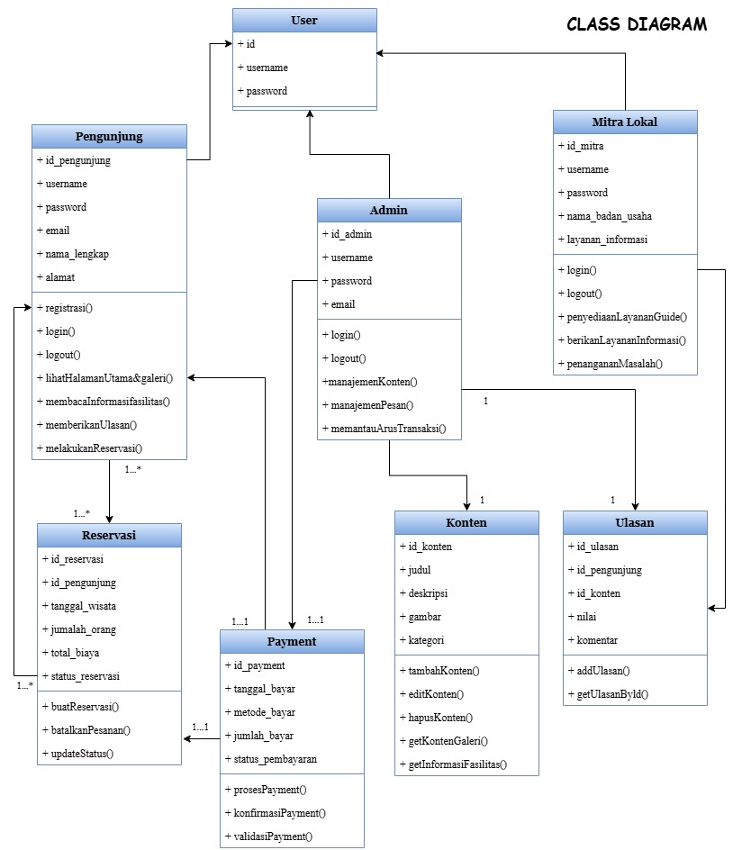

Identifikasi Potensi Lokal
Identifikasi potensi nyata dari daerah asal yang akan dipromosikan secara digital melalui platform website.
Nama & Deskripsi Potensi
🏞️ Goa Kaca — Wisata Alam Karst Sumatera Utara
Goa Kaca adalah destinasi wisata alam unggulan yang terletak di kawasan Sumatera Utara. Keunikan utama goa ini adalah kejernihan airnya yang luar biasa — layaknya kaca bening — sehingga pengunjung dapat melihat dasar goa dengan sempurna tanpa hambatan. Goa ini menjadi rumah bagi ekosistem karst yang terjaga.Pengalaman menyusuri lorong batu ditemani pantulan cahaya dari permukaan air bening menjadikan Goa Kaca sebagai destinasi yang memukau bagi pecinta alam, peneliti, dan fotografer dari seluruh Indonesia.
Lokasi Destinasi
Provinsi
Sumatera Utara
Kawasan
Kawasan Alami ini — dapat diakses via jalan setapak melewati hutan
Akses
±5 jam dari Kota Medan, menggunakan kendaraan roda dua/empat lalu dilanjut jalan kaki
Mengapa Belum Dikenal Luas?
Tidak Ada Platform Digital
Goa Kaca belum memiliki website resmi maupun media sosial aktif. Informasi hanya tersebar dari mulut ke mulut di komunitas lokal, sehingga tidak terjangkau oleh wisatawan luar daerah.
Infrastruktur & Promosi Minim
Akses jalan yang belum sepenuhnya memadai dan minimnya papan petunjuk membuat wisatawan sulit menemukan lokasi ini tanpa panduan lokal.
Dampak Positif Promosi Digital
Dengan platform digital, jangkauan informasi meluas ke seluruh Indonesia bahkan mancanegara, meningkatkan jumlah wisatawan, memberdayakan UMKM lokal, dan mendukung pelestarian ekosistem goa.
Potensi Ekonomi Masyarakat
Peningkatan kunjungan wisatawan akan mendorong pertumbuhan usaha lokal seperti warung makan, penginapan, dan pemandu wisata yang dapat menyerap tenaga kerja daerah.
Target Pengguna Utama
Wisatawan & Pecinta Alam
Pengunjung yang mencari destinasi wisata alam unik dan ingin merencanakan kunjungan terorganisir.
Fotografer & Konten Kreator
Mencari lokasi foto eksotis dengan keindahan alam karst yang belum banyak terekspos di media sosial.
Masyarakat & UMKM Lokal
Warga dan pelaku usaha yang mendapatkan manfaat ekonomi dari peningkatan jumlah wisatawan.
Dinas Pariwisata
Instansi pemerintah yang mendukung, mengawasi, dan mempromosikan potensi wisata daerah secara resmi.
Analisis Kebutuhan Sistem
Analisis kebutuhan perangkat lunak berdasarkan potensi Goa Kaca yang dipilih pada Soal 1.
a. Kebutuhan Fungsional — 7 Fitur Utama
| # | Fitur Utama | Deskripsi & Cara Kerja |
|---|---|---|
| F1 | Halaman Profil & Informasi | Menampilkan deskripsi lengkap Goa Kaca, sejarah, keunikan, fasilitas, dan aturan kunjungan kepada semua pengunjung tanpa perlu login. |
| F2 | Galeri Foto & Video | Pengunjung dapat menelusuri koleksi foto dan video HD yang dikurasi admin. Mendukung filter kategori (air, fauna) dan tampilan lightbox. |
| F3 | Sistem Reservasi Tiket Online | Pengunjung mendaftar akun, memilih tanggal kunjungan, jumlah orang, dan paket wisata, lalu melakukan pembayaran melalui sistem pembayaran digital. Sesuai class diagram: Reservasi memiliki atribut tanggal_wisata, jumlah_orang, dan total_biaya. |
| F4 | Ulasan & Rating Pengunjung | Pengunjung yang telah berkunjung dapat memberikan ulasan teks (komentar) dan nilai bintang 1–5. Rata-rata rating ditampilkan di halaman utama. Sesuai class diagram: Kelas Ulasan memiliki id_ulasan, id_pengunjung, id_konten, nilai, dan komentar. |
| F5 | Manajemen Konten Admin | Admin dapat menambah, mengubah, dan menghapus konten (artikel, galeri, harga tiket, informasi fasilitas) melalui dashboard khusus. Sesuai class diagram: Kelas Konten memiliki method tambahKonten(), editKonten(), hapusKonten(). |
| F6 | Layanan Guide & Mitra Lokal | Mitra Lokal dapat mendaftar, login, dan mengelola penyediaan layanan pemandu wisata (guide). Sesuai class diagram: Mitra Lokal memiliki method penyediaanLayananGuide() dan berikanLayananInformasi(). |
| F7 | Form Kontak & Manajemen Pesan | Pengunjung dapat mengirimkan pesan/pertanyaan melalui form kontak. Admin dapat membalas dan mengelola pesan melalui fitur manajemenPesan(). |
b. Kebutuhan Non-Fungsional — 4 Aspek
🚀 Performa
Halaman utama memuat dalam ≤3 detik pada koneksi 4G. Gambar dioptimasi dengan lazy loading dan kompresi WebP.
🔒 Keamanan
Semua input divalidasi dan di-sanitasi (anti-SQL Injection & XSS). Password terenkripsi bcrypt. Transaksi menggunakan HTTPS/SSL.
📱 Responsif
Tampilan optimal di semua perangkat (mobile ≥320px, tablet, desktop) dengan pendekatan mobile-first CSS yang fleksibel.
♿ Usability
Navigasi intuitif max. 3 klik untuk akses informasi apapun. Kontras warna memenuhi standar WCAG 2.1 AA untuk aksesibilitas.
c. Peran Pengguna (User Role) — 4 Peran
Sesuai class diagram yang disediakan, sistem memiliki 4 peran pengguna dengan hak akses masing-masing:
Hak Akses & Fungsi
- Melihat seluruh konten & galeri publik
- Registrasi & login akun
- Melakukan reservasi tiket (buatReservasi)
- Membatalkan pesanan (batalkanPesanan)
- Memberikan ulasan & rating (addUlasan)
- Membaca informasi fasilitas
- Mengirim pesan kontak
Hak Akses & Fungsi
- Manajemen konten (tambah/ubah/hapus)
- Memantau arus transaksi pembayaran
- Manajemen pesan pengunjung
- Konfirmasi payment & reservasi
- Kelola akun pengguna & mitra
- Akses dashboard laporan & statistik
Hak Akses & Fungsi
- Login ke portal mitra
- Penyediaan layanan guide
- Memberikan layanan informasi wisata
- Penanganan masalah di lapangan
- Kelola profil badan usaha mitra
Hak Akses & Fungsi
- Proses transaksi pembayaran tiket
- Konfirmasi status pembayaran
- Validasi keabsahan pembayaran
- Integrasi dengan gateway payment
Konsep & Arsitektur Perangkat Lunak
Rancangan konsep lengkap perangkat lunak GoaKaca.id beserta visi, misi, modul utama, dan alur kerja sistem.
a. Nama Aplikasi
GoaKaca.id
Nama GoaKaca.id dipilih karena mencerminkan keunikan inti destinasi — kejernihan air goa yang bening layaknya kaca — sekaligus menegaskan identitas lokal Indonesia melalui ekstensi domain .id. Nama ini singkat, mudah diingat, deskriptif, dan kuat sebagai merek digital pariwisata yang bisa dikenal secara internasional.
b. Visi & Misi
🌐 Menyediakan informasi wisata Goa Kaca yang lengkap, akurat, dan mudah diakses oleh masyarakat lokal maupun wisatawan mancanegara melalui platform digital yang responsif.
💼 Memfasilitasi reservasi tiket, pembayaran digital, dan layanan guide secara online untuk meningkatkan efisiensi pengelolaan dan kenyamanan pengunjung.
🌿 Mendukung pelestarian ekosistem Goa Kaca dengan mempromosikan praktik wisata yang bertanggung jawab, edukasi lingkungan, dan pembatasan kuota kunjungan berbasis teknologi.
c. Modul Utama Sistem — 8 Modul
Beranda
Halaman utama dengan hero banner, highlights destinasi, rating terkini, dan pengumuman event wisata.
Profil & Informasi
Deskripsi lengkap Goa Kaca, sejarah, keunikan, ekosistem, fasilitas, dan aturan kunjungan.
Galeri Media
Foto dan video HD tersaring berdasarkan kategori (air, fauna, panorama).
Reservasi & Tiket
Pemesanan tiket online dengan pilihan paket, kalender ketersediaan, dan integrasi payment gateway.
Ulasan & Komunitas
Sistem rating dan ulasan pengunjung, forum diskusi, dan tips wisata dari komunitas.
Portal Mitra Lokal
Dashboard mitra untuk mengelola layanan guide, jadwal, dan penanganan masalah lapangan.
Kontak & FAQ
Form kontak terintegrasi, FAQ interaktif, dan pendaftaran pemandu wisata lokal baru.
Dashboard Admin
Panel pengelolaan konten, pemantauan transaksi, manajemen akun, dan laporan statistik kunjungan.
d. Alur Kerja Sistem
Pengguna yang belum login dapat menelusuri seluruh informasi publik tanpa hambatan. Login diperlukan hanya untuk melakukan reservasi, memberikan ulasan, atau mengirim pesan dengan identitas terlacak. Admin memantau seluruh aktivitas melalui dashboard terpisah.
Use Case Diagram
Diagram use case sesuai dengan diagram yang telah dirancang — menampilkan 4 aktor utama: Pengunjung, Admin, Mitra Lokal, dan Pembayaran.

Use Case Diagram GoaKaca.id — menampilkan 4 aktor (Pengunjung, Admin, Pembayaran, Mitra Lokal) dengan relasi include dan extend.
Deskripsi Use Case
| Nama Use Case | Aktor | Deskripsi | Pra-kondisi | Pasca-kondisi |
|---|---|---|---|---|
| Lihat Halaman Utama & Galeri | Pengunjung | Pengunjung mengakses website dan melihat konten beranda serta galeri foto/video. | Website dapat diakses di browser | Konten tampil dengan lengkap |
| Baca Informasi Fasilitas | Pengunjung | Pengunjung membaca detail informasi fasilitas wisata Goa Kaca yang tersedia. | Halaman informasi dapat diakses | Informasi fasilitas tampil |
| Registrasi Akun | Pengunjung | Pengunjung baru mendaftarkan diri dengan mengisi form registrasi (nama, email, password). | Pengunjung belum memiliki akun | Akun baru berhasil dibuat |
| Login & Logout | Pengunjung, Admin | Pengguna masuk atau keluar dari sistem menggunakan kredensial (username & password). | Memiliki akun terdaftar | Sesi pengguna aktif/berakhir |
| Reservasi include: Pembayaran | Pengunjung | Pengunjung memesan tiket wisata dengan memilih tanggal, jumlah orang, dan paket. Melibatkan proses pembayaran. | Pengunjung sudah login | Data reservasi tersimpan, tiket diterbitkan |
| Batalkan Pesanan extend: Reservasi | Pengunjung | Pengunjung membatalkan reservasi yang telah dibuat (kondisi tertentu — extend dari Reservasi). | Reservasi aktif ada dalam sistem | Reservasi dibatalkan, status diperbarui |
| Memberikan Ulasan | Pengunjung | Pengunjung yang telah berkunjung memberikan rating (nilai) dan komentar terhadap destinasi. | Pengunjung sudah pernah berkunjung | Ulasan tersimpan dan tampil di website |
| Proses Pembayaran | Pembayaran | Sistem memproses transaksi pembayaran tiket yang dilakukan pengunjung melalui gateway. | Data reservasi valid tersedia | Transaksi diproses, status diperbarui |
| Konfirmasi Pembayaran | Pembayaran | Sistem mengkonfirmasi keberhasilan pembayaran dan memvalidasi transaksi. | Proses pembayaran selesai | Konfirmasi dikirim ke pengunjung |
| Manajemen Konten | Admin | Admin menambah, mengubah, dan menghapus konten informasi wisata di dalam sistem. | Admin sudah login | Konten diperbarui di website |
| Memantau Arus Transaksi | Admin | Admin memantau seluruh transaksi pembayaran dan reservasi yang terjadi di sistem. | Admin sudah login, transaksi ada | Laporan transaksi tampil di dashboard |
| Manajemen Pesan | Admin | Admin membaca dan membalas pesan kontak yang dikirimkan pengunjung. | Ada pesan masuk di sistem | Pesan terbaca/terbalas oleh admin |
| Penyediaan Layanan Guide | Mitra Lokal | Mitra mendaftarkan diri dan mengelola layanan pemandu wisata yang ditawarkan. | Mitra sudah terdaftar dan login | Data guide tersimpan dan tampil |
| Penanganan Masalah | Mitra Lokal | Mitra melaporkan dan menangani kendala yang terjadi di lapangan selama kunjungan wisata. | Terdapat masalah yang dilaporkan | Laporan masalah tercatat dan ditangani |
Activity Diagram
Dua activity diagram: (1) Alur reservasi tiket oleh pengunjung, (2) Alur admin mengelola konten.
Activity Diagram 1 — Alur Reservasi Tiket Pengunjung

Activity Diagram 1 — Alur pengunjung melakukan reservasi tiket: mulai akses website, cek login, pilih paket, sistem validasi ketersediaan, proses pembayaran paralel (kirim email + update DB), hingga konfirmasi tiket diterima.
Activity Diagram 2 — Alur Admin Mengelola Konten

Activity Diagram 2 — Alur Admin mengelola konten: login dashboard, pilih aksi (Tambah/Edit/Hapus), sistem validasi input dengan decision node, simpan ke database jika valid, tampilkan notifikasi berhasil kepada admin.
Sequence Diagram — Pengiriman Form Kontak
Sequence Diagram untuk alur pengunjung mengisi dan mengirimkan form kontak kepada pengelola GoaKaca.id.

Sequence Diagram — Melibatkan 4 lifeline: Pengunjung (aktor), Halaman Kontak (boundary), Controller/Server (control), Database (entity). Alur: buka form → isi data → submit → validasi → simpan DB → notif email → konfirmasi sukses ke pengunjung.
Class Diagram
Class Diagram sistem GoaKaca.id sesuai diagram yang telah dirancang — menampilkan 8 kelas utama beserta atribut, method, dan relasi antar kelas.

Class Diagram GoaKaca.id — 8 kelas: User (superclass), Pengunjung, Admin, Mitra Lokal (turunan User via generalisasi), Reservasi, Payment, Konten, dan Ulasan. Relasi: generalisasi (inheritance), asosiasi, dan komposisi.
Penjelasan Peran Kelas
| Kelas | Peran dalam Sistem | Relasi Utama |
|---|---|---|
| User | Superclass yang merepresentasikan semua pengguna sistem. Menyimpan atribut dasar identitas (id, username, password) yang diwarisi oleh semua jenis pengguna. | Superclass dari Pengunjung, Admin, Mitra Lokal |
| Pengunjung | Merepresentasikan wisatawan yang mendaftar dan menggunakan layanan GoaKaca.id. Dapat melakukan reservasi, memberikan ulasan, dan mengakses informasi wisata. | Generalisasi dari User; 1..* Reservasi |
| Admin | Mengelola seluruh operasional sistem: konten informasi, pesan pengunjung, dan pemantauan arus transaksi. Memiliki akses penuh ke dashboard manajemen. | Generalisasi dari User; 1 Konten |
| Mitra Lokal | Mewakili pelaku usaha lokal (pemandu wisata, UMKM) yang bermitra dengan GoaKaca.id. Mengelola layanan guide dan penanganan masalah lapangan. | Generalisasi dari User; menyediakan layanan |
| Reservasi | Menyimpan data pemesanan tiket wisata oleh pengunjung. Mencakup tanggal kunjungan, jumlah orang, total biaya, dan status reservasi saat ini. | 1..* dari Pengunjung; 1..1 Payment |
| Payment | Menangani proses transaksi keuangan: pemrosesan, konfirmasi, dan validasi pembayaran tiket wisata. Terintegrasi dengan gateway pembayaran eksternal. | 1..1 dari Reservasi |
| Konten | Menyimpan semua konten informasi wisata (artikel, galeri, fasilitas) yang dikelola admin. Mendukung CRUD lengkap melalui method tambah, edit, dan hapus konten. | Dikelola oleh Admin; memiliki Ulasan (komposisi) |
| Ulasan | Merepresentasikan penilaian (nilai 1–5) dan komentar yang diberikan pengunjung terhadap konten wisata. Terhubung ke id_pengunjung dan id_konten untuk identifikasi. | Komposisi dari Konten; diberikan oleh Pengunjung |
Form Kontak — Hubungi Kami
Implementasi form kontak interaktif sesuai soal 5. Form ini merepresentasikan fitur kontak pada website GoaKaca.id yang berfungsi secara visual di browser.
📍 Lokasi Wisata Goa Kaca
Kawasan Sumatera Utara
±5 jam dari Kota Medan
📞 Kontak Langsung
Telepon: +62 838-5634-4538
Email: info@goakaca.id
WhatsApp: +62 838-5634-4538
🕐 Jam Operasional
Senin – Sabtu: 08.00 – 17.00 WIB
Minggu & Hari Libur: 07.00 – 16.00 WIB
📱 Media Sosial
Instagram: @goakaca.id
Facebook: Wisata Goa Kaca Sumut
YouTube: GoaKaca Official
Video Presentasi & Identitas Mahasiswa
Identitas mahasiswa dan informasi video presentasi yang menjelaskan step-by-step pengerjaan UTS Rekayasa Perangkat Lunak.
Identitas Mahasiswa
| Nama Lengkap | Gonzalez Exaudi Manurung |
| NIM | 253303611230 |
| Kelas | II / 2 Pagi A |
| Mata Kuliah | Rekayasa Perangkat Lunak |
| Semester | Semester II — Tahun Akademik 2025/2026 |
| Dosen Pengampu | Achmad Ridwan, ST, M.Si |
| Tanggal UTS | Kamis, 7 Mei 2026 — Take-home (7–9 Mei 2026) |
| Batas Pengumpulan | Sabtu, 9 Mei 2026 Jam 10.15 WIB |
Link Video YouTube
🎬 Link Video Presentasi (minimal 5 menit, visibilitas Public):
[Ganti dengan link YouTube setelah upload — contoh: https://youtu.be/XXXXXXXXX]Video wajib menampilkan: tampilan website berjalan di browser, penjelasan setiap diagram UML, dan alasan pemilihan Goa Kaca sebagai potensi lokal.
Link Simulasi Diagram
🔗 Link Diagram UML (draw.io / Lucidchart / PlantUML):
https://drive.google.com/drive/folders/1b50DTqgOtkYFxKKgQUUOHvsAcS0qujf4?usp=sharingDiagram dibuat sendiri menggunakan tools draw.io, Lucidchart, atau PlantUML. Tidak diperbolehkan menyalin dari internet.
— Terimakasih Sudah Melihat. Saya akan jadikan karya ini agar lebih dikenal masyarakat luas. —
Semester II | Kelas 2 Pagi A | Tahun Akademik 2025/2026 | Universitas Prima Indonesia — Fakultas Sains dan Teknologi